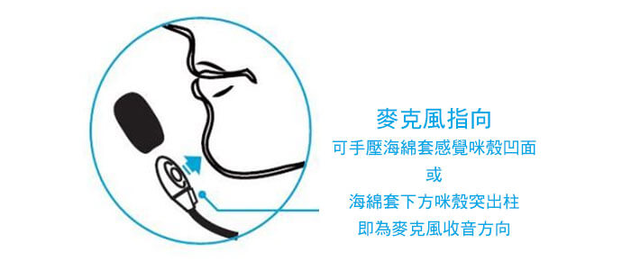

客戶服務
電池 / 充電知識
- 充電時，指示燈顯示為紅燈，充飽電後顯示變為藍燈。
- 本公司產品皆使用高聚合鋰電池，安全 壽命長；無記憶效應，可以隨時充電。
- 雖產品設計使用手機電池保護芯片可做電池保護，插充電器切勿連續超過兩天；若電池電量過低會造成電池損壞，若有長時間不使用、如寒、暑假休假前，確定先將電池充滿後再收妥存放。
注意：
- 不支持 Type-C 快充充電器。 (現今 Type-C 還未有全球標準，無法保證其輸出為 USB 5V 標準電壓，會影響產品壽命)。
- 嚴禁使用電腦、筆電、教學機之 USB 充電，其提供電力不足可能會損壞設備。
- 充電器規格要求 : 輸出電壓 4.75V~5.25V ，容量 1.2A ( 安培 ) 或以上。建議使用舊手機充電器即可，若有充電器需求，可向公司洽詢。
- 本公司特製 Y 型 USB 充電線僅供本公司產品套件使用，絕對不可使用於手機或其他電子產品充電或數據交換使用，可能會造成危險或數據遺失。
- YS-250 無線擴音音箱提供 "邊充邊用" 擴音功能：若您音箱電量已低，您可以使用移動電源或充電器邊充電邊使用無線音箱功能。
* 切勿長期以此方式使用音箱，音箱長期插著 USB 連續充電，會有安全顧慮與嚴重影響電池壽命
我們的產品非常省電、電池容量相較手機電池非常小( 功率 1 W )。我們麥克風設定的充電電流在 0.2A，擴音器在 0.7A 左右，所有充電使用歐盟標準 MicroUSB 5V充電、搭配8年前淘汰智慧手機充電器都綽綽有餘。亦符合全球環保要求的趨勢。
建議使用個人多餘的手機充電器搭配養聲堂所附的 Y 型 USB 充電線，一次充電兩個設備。但 Y 型 USB 充電線除了本產品充電使用外，禁止移做他用，避免造成不可知的危險。
注意：
- 自行購買的充電器，須留意有經濟部商檢局 BSMI 標章 方可使用。
- 部分帶有手機快充的 Type-C 充電器，輸出不是 USB 5V ，不可以用在麥克風/音箱充電。 ( 現今 Type-C 還未有全球標準，無法保證其輸出為 USB 5V 標準電壓，會影響產品壽命 )。
- 禁止使用電腦、筆電、教學輔助機的 USB 充電， 那些 USB 是供資料傳輸, 長期做為充電使用有可能破壞內部零件。
- 市面有些延長線或設備延伸的 USB 孔, 也不要使用，其供電品質良莠不齊，作為小設備如 USB LED 燈尚可，當 3C 設備充電很可能造成電路損壞。
- 我們的產品非常省電、電池容量相較手機電池非常小(功率 1 W)。我們麥克風設定的充電電流在 0.2A，擴音器在 0.7A 左右，所有充電使用歐盟標準 MicroUSB 5V充電、搭配 8 年前淘汰智慧手機充電器都綽綽有餘。亦符合全球環保需求。
- 建議使用個人多餘的手機充電器搭配產品所附的 Y 型 USB 充電線一次充電兩個設備。但 Y 型 USB 充電線除了本產品充電使用外，禁止移做他用，避免造成不可知的危險。
我公司產品皆使用高聚合鋰電池，可隨時充電保證無記憶效應。若有需要可隨時充電。
若有長時間不需使用本產品，如寒、暑假放假前將電池充滿再收納。若完全不使用，最好 6~8 個月拿出來充電一次。
鋰電池若長期不用又未充電，會因電壓過低造成電池完全失效；相反的，如果經常使用，電池的效能佳，更可以延長其壽命。我們鋰電池內部有筆記型電腦規格的電池保護板，可以延長電池壽命。
另外，公司也有零件做售後服務的，可不用擔心。
我公司產品電池皆有充電保護板。鋰電池會自然放電，電壓持續過低時，將會無法再充電。且電壓太大需隔離保護電池，充飽電時須將電源切開保護。
充電保護板功能就是沒電時自動關機，充電充飽後會自動切斷電源 絕不會過充。並設計有過度放電保護裝置，以保護電池。
設備電池的充電原理是靠電流流入，若您把充電器的電流當自來水，控制電流流量大小的開關 ~ 是在設備 ( 手機/麥克風/音箱... ) 這邊，所以充電電流多少，是由像手機、麥克風等所控制。 充電器的輸出大些，設備還是"只取"他需的電流充電。
充電器上標示的電流數，是指它可以輸出“最大”的額定容量 ( 如標示 1A or 2A )， 絕對不能超過。充電器內部沒有限制電流開關，假如設備端電流需求超過充電器額定容量，超過它的設計安全範圍，先期就是過熱老化，嚴重時充電器會燒毀。
我們產品電池快用完時，正常閃爍的藍燈會轉變為紅燈，看到紅燈閃爍後還有約 40多分鐘使用時間 ( 為保護電池，電池電壓過低會自動關機 ) 需儘快充電。若有急需使用，下課時充電 10 分鐘可使用將近一個多小時。
養聲堂產品使用說明
| 動作 | 燈號 / 狀態 | |
|---|---|---|
| 開 機 | 兩邊同時按 2 sec. | 藍燈變成 4 sec. 閃爍一次 ~ "連線中" 可開始使用。 |
| 關 機 | 兩邊同時按 2 sec. |
麥克風：紅燈亮後，燈號全滅。 音箱：藍燈亮後，燈號全滅。 |
| 充 電 |
充電中：紅燈恆亮
充電已完成：藍燈恆亮 |
|
| 配 對 | 麥克風/音箱並列同時按下按鍵持續 6~7 秒 ~ 藍燈長亮後放開按鍵 | 使用時機：手機配對、更換新產品組 合、產品送修有更換主機板時 |
- 一般您的麥克風或音箱組出廠皆已配對好，開機即可使用
- 建議您使用時，先開啟要使用的麥克風或手機，再開啟音頻主機或擴音音箱
-
麥克風/音箱內皆可記憶多個設備，建議您先開啟要使用的麥克風 再開啟無線音箱。
( 連線是依音箱最後使用過的麥克風順序循序搜尋，若不是最後一次用的麥克風，開機後需等5~6秒才能連線 ) - 若是使用中欲從麥克風 A 切換為麥克風 B；可以先將麥克風 A 關機 ( 無線音箱不用關機 ) 開啟麥克風 B 開啟後再短按開機鍵一次；即可連線‧
- 連結手機：與手機，平板，筆電配對時，先將擴音音箱進入配對模式 ( 音頻主機/音箱按鍵持續 7 秒，藍燈長亮 )，開啟手機端藍牙 搜尋設備 出現設備音箱型號 "YS-250"，點擊連線。行動裝置顯示 "已連線" 即可已開始使用 ( 音頻主機為 YS-200 )
相對市面其他的麥克風產品，我們特別設計 "近距離增益" 功能，即麥克風只對 5cm 內收到的聲音做擴音，超過 5cm 即會被屏除。所以使用者在有效距離內的聲音會被如實擴音，周邊的吵雜聲、喇叭廣播聲音都會被屏除。
- 本產品為指向性麥克風，為達收音最佳效果 確定麥克風朝向嘴巴方向有較佳效果。
- 手持麥克風音量階數是 5 階( 1 ~ 5 ) ，開機時為 3 階，音量調整 +/- 鍵控制，不會循環。
- 音量調整後關機時設定不會被記憶，下次開機時會回到原廠音量 ( 3 階 )。
市面常見的頭戴式耳麥，掛在頭上有壓迫不適感，同時會夾到頭髮影響造型。我們試驗許久，研發出最好的設計就是頸掛麥克風的設計；除外觀輕巧，配戴肩上毫無負擔，也可釋放雙手。最合適專業長時間配戴使用，配戴一天都很舒服。
- 頸掛麥克風收音穩定，使用時不需時時握住麥克風頭。儘量身體微轉動而不是只有頭部的轉動 麥克風收音效果更佳。
- 使用的頸掛支架材質有些記憶的效果，您戴久了會展開些，不會再縮回。
相對市面其他的麥克風產品，我們特別設計 "近距離增益" 功能，即麥克風只對 5cm 內收到的聲音做擴音，超過 5cm 即會被屏除。所以使用者在有效距離內的聲音會被如實擴音，周邊的吵雜聲、喇叭廣播聲音都會被屏除。
為達收音最佳效果請參考下圖，手壓海棉頭確認收音面朝向使用者嘴巴。
手持麥克風有音量調整鍵，頸掛麥克風只有一個按鍵可以調整音量嗎？
可以的，我們將電腦滑鼠連續按兩下的 "點擊" 導入產品中！
連線時，快按電源鍵兩下，可聽到提示音，隨即更換音量，共 5 階 表示為音量 ( 1 ) ~ ( 5 )：
- 原廠音量 (3) 音量(4) 音量(5) 音量(1) 音量 (2) 一般音量(3) …… 依次循環
- 手持麥克風已有音量調整 +/- 鍵，階數也是 5 階，不會循環
- 音量調整後關機時設定不會被記憶，下次開機時會回到原廠音量 (3)
我公司產品已全面無線數位化，無頻道限制，不需對頻，開機即連線使用。
但改變或增加產品發射端/接收端組合時，新產品第一次需做"配對"的動作，只需做一次連線資料就會被記憶在設備中。只要配對一次，可被記憶在兩端的設備內，不需再作配對。
操作方式為：
先確定兩邊關機後，發射 / 接收兩套件並列，同時按下按鍵持續 7 秒，"直到藍燈長亮後再放開" ( 擴音音箱會有配對提示音 )，待長亮燈號熄滅後，就已連線，開始使用。
是一直按著兩邊的按鈕 7 秒 "直到藍燈長亮後再放開"
優點：
- 以後有一端壞了，就可以不用一套全換，也不必送回原廠設定。
- 在不同環境可以更換發射的手機或麥克風、接收的銀頻主機或音箱。
- 又或，未來同一個麥克風，在教室可以有接擴音器的主機端接收盒，離開教室換成接無線小音箱...，是蠻方便的。
產品設計創新
海綿套的功能主要在於去風切聲，若有沾到粉筆灰或汙染 ，可取下用水洗淨風乾 ( 不可使用酒精等揮發性易體清洗 )。
此為消耗品，可購買更換。
回音的造成大部分是因喇叭聲音過大，音波碰到牆壁又回到麥克風而重覆收音造成 ( 回授 )，部分也與房間格局或空間比例有關。養聲堂麥克風/擴音器皆已是數位化的產品，開發時已經透過硬體和軟體技術同時做避免回音的設計，很少有發生回音問題。若您有此問題，請參考下列建議。
- 若使用麥克風無線擴音音箱有此現象，是因空間 ( 房間太小或擴音音量過大所造成，先將音量向下調整一些。
- 也可能是您使用時站在音箱正前方，可將音箱小轉一個角度試試 ( 避免喇叭正向直接朝向麥克風 )。
- 產品為指向性麥克風，為達收音最佳效果，確定麥克風朝向嘴巴方向有較佳效果。先試試調整麥克風頭和你嘴巴的位置和距離 ( 2~5cm )，您可以將發聲的音量加大些，最後再調整擴音器上的音量設定，交互測試看結果如何，也可改善。( 可參考說明書或在 Youtube 搜尋 "養聲堂" 麥克風使用方式之說明 )。
嘯叫，一般是因為你麥克風對準你的嘴巴之外，可能方向也同時對到了喇叭正面 ( 嘴巴和喇叭同一方向 )，造成麥克風重複收音，產生嘯叫。
我們的麥克風整體設計上，最基礎的規格是須避免嘯叫，產品有特別避免發生嘯叫的設計，除非麥克風放在喇叭前 5 cm，幾乎不會有此現象。
麥克風使用非常普遍，從演唱會張惠妹專屬的百萬無線麥克風到電子商場幾十元的麥克風都有，價格差距達幾萬倍以上，也代表麥克風裡面的學問非常的深奧。產品的是須考慮到價格、實用性、需求 之間的平衡。
教育 / 導覽是使用麥克風最多的應用，大多數人從第一天踏入職場就開始使用直到退休，大家也各有各的喜好。
我們先將麥克風分類為有線/無線，數位式/類比式。我們以教師的角度並加入技術來簡略說明，先來談談 有線和無線麥克風
-
有線麥克風 :
使用歷史悠久的產品，動圈式麥克風，簡單的基本構造包含線圈、振模、永久磁鐵三部份，靈敏度較低，高低頻響應表現較差。優點是價格較便宜，聲音較為柔潤，價位也相對低廉。但是對教學有幾個缺點，接頭容易接觸不良、重量重、容易髒，無法符合今日走動教學的需要。 -
無線麥克風 :
無線麥克風傳輸方式，從早期紅外線、FM、VHF、UHF(前面幾類皆屬類比式麥克風)、這幾年開始進入數位式無線麥克風。-
紅外線麥克風 :
紅外線屬不可見光，跟常見的電視遙控器相當，主要有方向性，光線走直線，被遮到就沒信號了。 -
FM 麥克風 :
與收音機相同，使用頻率調變(Frequency Modulation)傳送聲音，成本低；但也無保密與抗干擾機制，遇干擾時需自行更改頻率。台灣是無法使用FM技術做相關應用，因地下電台的頻率蓋台與過高的功率。常造成正規FM產品的干擾。 -
VHF/ UHF 無線麥克風 :
工作頻率 VHF：30~300MHz，UHF：300~3GHz。 2014年台灣開放 4G LTE後，部分頻道相衝突，結果是~ 功率強的 LTE 會使VHF / UHF無線麥克風造成干擾，目前幾乎都需以換新機解決。大眾型的VHF/ UHF 無線麥克風產品有頻道數問題，無保密性，高階 UHF 接收端與天線需專業人員調整，單價高較適合會議室與特定場所。 -
數位無線麥克風 :
目前短距離的無線傳輸產品有 2.4GHz 和藍牙兩種(頻率都是 2.4GHz)。前者因越來越普遍的 WiFi和 IP CAM等產品的頻率衝突，因干擾造成啞巴(沒有聲音)頻率越來越高，僅適合在空曠或夜市之類使用，在學校和會場是無法使用的。相對藍牙本來就是短距離無線音頻傳輸最好的技術，抗干擾能力強，是無線麥克風和無線擴音音箱最好的選擇。
-
紅外線麥克風 :
數位無線技術
我們產品使用的藍牙無線頻率 2.4GHz，此為國際通用公開頻率，到任何國家可以直接使用，不需向政府申請 ( 不會發生如台灣近期 UHF 麥克風頻率與政府新開放 4G 手機信號衝突問題 )。
全球免申請 ISM 頻段：ISM 頻段是各國挪出某一段頻段主要開放給工業，科學和醫學機構使用。允許應用這些頻段的無線設備無需申請許可。
產品特色：
- 低功耗/低輻射：同樣的使用時數下，重量只有 2.4G 的 1/6 ， UHF 的 1/10。
- USB 充電鋰電池：環保、穩定、省錢。乾電池還會造成機構損耗。
- 數位加密保護：學校配備 100 組以上使用，也不會有串音或干擾現象。
- 藍牙跳頻技術：可有效避開 WiFi 干擾；目前 2.4G 麥克風普遍因 WiFi干擾造成沒有聲音現象，非常不穩定。
- 故障率非常低：綜觀過去大量採購的學校，已經使用多年鮮少返修。
手機從 GSM 數位化後就大大提升安全性，不會被干擾。我們的產品也已經數位化，在實際使用上已有多所學校採購數十到 100 多套，皆可以到任何教室後 開機隨插即用，絕對不會有頻道或干擾問題。蘋果公司周邊產品耳機手錶已出貨數億個，也沒有衝突的問題。同一個空間中，可以打開多組無線麥克風都可獨立連結運作。
另數位無線技術有增加特殊的跳頻 ( FHSS ) 和加密 ( Encryption ） 技術，可避免其他無線產品如 WiFi 的干擾。
一對一連線的特性，可以保證上、下、左、右、不同教室都能獨立運作不會相互干擾，也沒需其他無線產品複雜的對頻操作。
二代產品距離 25米。實際測量直線距離可達35到50公尺或以上，無線產品使用中可能是人群聚集的環境 WiFi 手機高度使用區域藍牙信號因干擾與人體阻隔會有衰減，皆會影響效果造成有效距離減少，藉由手機無線的動態功率調整仍能保持 15~20 公尺傳輸無礙。
-
4G 干擾 :
台灣 4G/LTE 手機開放後，過去在無線麥克風使用最多的 UHF 技術與台哥大遠傳被授權的頻率重疊。使得過去數量眾多的UHF 無線麥克風將將更換機台切換到 UHF 麥克風專用頻率或新技術的設備。教育界使用的簡易型 UHF 無線麥克風，也只有停用或更新新設備，沒有其他解決的方式。 -
其他無線信號干擾 :
音頻傳播有即時性，不然會有延遲的現象，2.4G 因抗干擾技術較簡單，目前普遍遭遇 WiFi 的干擾，有忽然沒聲音現象。藍牙透過 FHSS 跳頻技術，抗干擾能力佳保密性佳，也普遍為手機的無線耳機音箱所使用。 -
串音：
部分無線麥克風，頻度數不足，類比無法保密；另如 2.4G，無線安全性低、防錯與保密技術，容易被串音；隔壁/上下相鄰教室聲音所干擾。我們的無線麥克風是經數位化的保密與錯誤糾錯處理，為避免其他無線信號干擾有跳頻(Hot doping)技術，除避免干擾外 還可讓聲音更清晰。
這必須看使用者的用途，目前電視台、演唱會還是以專業 UHF 為主，音質滑順、多個麥克風同時使用、功率可以調整(功率高讓傳輸穩定長時間可能傷身)以保證最佳效果，花費也相當昂貴，高達數萬元。市售大部分家用UHF克風以家用 KTV為主，相鄰頻道相同就可以合唱了，在學校 公共場所完全無法使用。
對教學 / 導覽 / 銷售工作而言，麥克風的需求主要是希望~~使用時間長、1對1 使用不被相鄰設備干擾、輕薄短小/可攜帶，使用範圍 10~20米，操作簡單隨插即用，最重要價格實惠。以過去市面產品來看，FM、VHF、UHF 皆很難達到上述之目的。
無線麥克風升級說明 (2021版)
2021 年5月配合二代麥克風系列新成員- YS-250 智慧無線擴音音箱 –上市，公司同時對二代麥克風效能做更進一步的提升，除對麥克風原功能再優化創新，也使其在與無線音箱搭配時呈現更好的效果。
若您為 2021 年5月前二代智慧無線麥克風組的客戶，欲使用已有的麥克風而添購無線擴音音箱(YS-250) ，您的麥克風須先送回原廠做功能的升級，搭配音箱時方能如虎添翼。
- 所有 2021.05 之後出貨的麥克風皆已是最新版本生產，可以任意搭配音頻主機，智慧無線擴音音箱。
- 沒有計畫添購擴音音箱需求者，沒有升級您麥克風的必要。
- YS-250音頻接收主機版本也有更新，但主功能相同，沒有額外升級的必要。
- 如何辨識您的麥克風為2021版本:
- 初版 : 麥克風開機連線後, 燈號顯示為 8 秒閃一次。
- 2021版: 麥克風開機連線後, 燈號顯示為 4 秒閃一次。
升級內容說明如下 :
-
麥克風收音 :
我們開發麥克風時非常強調避免現場的喇叭回授(喇叭會吱吱的尖叫)，過去我們是使用晶片軟體設計和單指向麥克風以物理方式排除環境噪音對麥克風的影響。經多年研發，此次2021版升級改採全指向麥克風，收音距離範圍較廣，收音音質與效果更接近人聲的原音重現，且依舊保持避開現場的喇叭回授特色。 -
匹配擴音音箱的設計 :
無線麥克風的設計，隨接收端為音頻主機或音箱特性的不同，需特別設計逐一調整。麥克風要能兼容音頻主機與擴音音箱使用，麥克風部分也須增加新功能才能同時有更好的效果。 -
其他：
狀態指示 LED 燈顯示方式修改, 以及其他問題修正。
二代麥克風 升級程序
- 請直接與養聲堂公司聯絡確定無線擴音音箱訂單，並確認麥克風版本是需做2021版升級。
- 無論您是如何購買，所有麥克風升級與技術的諮詢請洽詢養聲堂科技，
電話直撥 02-2395-5780，也可以用官網上的 Line , FB, email 與公司連絡。 - 您與公司確認個人資料後，將您的麥克風包裝妥當附上個人訊息寄回公司；
公司將麥克風升級後連同您採購的無線擴音音箱YS-250 以超商取貨付款方式寄回給您(運費由公司負擔)。 - 麥克風升級若非搭配無線擴音箱訂單與出貨，運費由客戶負擔。
- 麥克風風升級酌收工程/零件費用 $100。
- 若音箱鑑賞期內您對覺得不合適，麥克風升級費用無法退回。
產品保固與維修
-
產品報固 :
期限會註明於隨貨說明/保證書中；若未註明日期 需提示購買來源/日期 亦享有 1年有限保固。保固期不適用於配件。 -
產品完整 :
如自行拆解更換任何原廠配件將導致保固失效。 -
產品異常 :
客戶覺得產品異常時，可先以電話, Line , FB 與公司人員洽詢 是否為使用上問題或可自行解決。若經確定須送修產品時，請依照公司訊息將完整產品寄回。 -
保固期內容 :
產品在正常使用下保固期內發生故障，養聲堂科技將免費修理或更換產品。養聲堂科技保留以下權利 (i) 使用現有零件修理產品，或 (ii) 以相同產品或同價位產品更換故障產品。 -
收費 :
若產品維修需更換零件，養聲堂科技將先提供客戶報價，經同意後再進行維修，歸還維修完畢之產品所產生的運費則由養聲堂科技負擔。 -
檢修 :
若客戶返回之產品，經檢驗功能正常，公司將酌收相關檢驗費、人工材料費、運費。